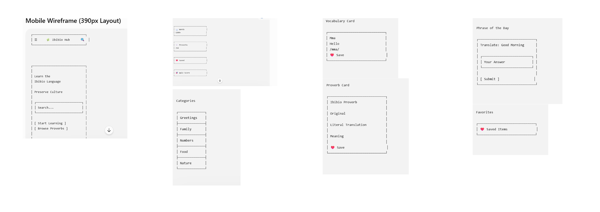
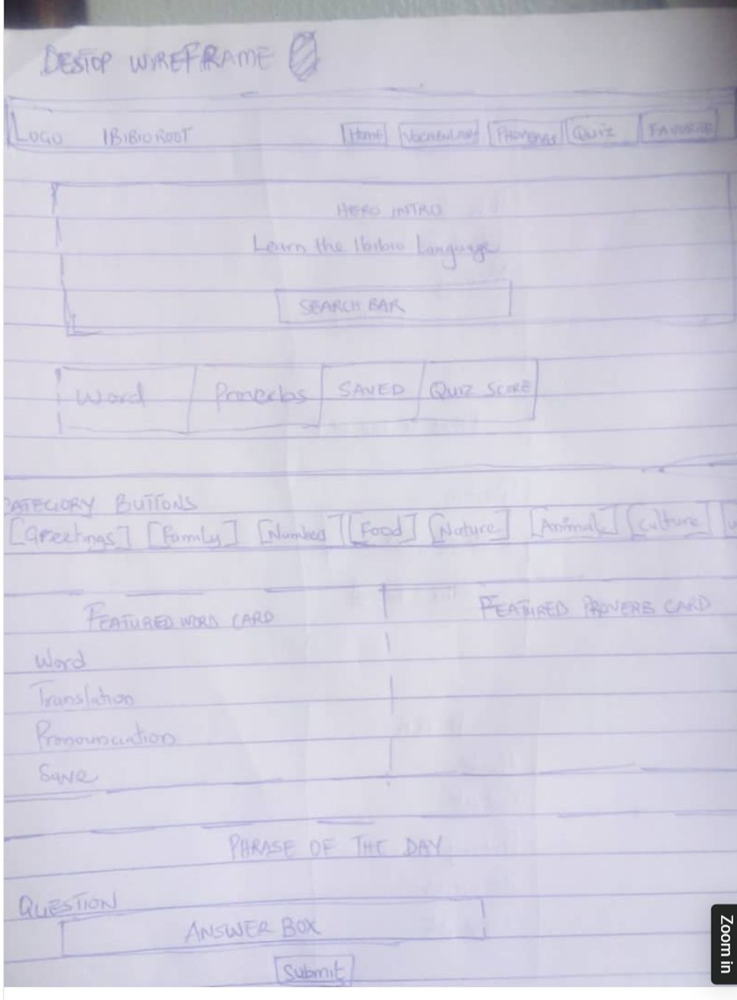

1. Site Name
Ibibio Roots
The name "Ibibio Roots" was chosen because it is short, memorable, and immediately communicates the purpose of the site: helping people reconnect with the language and oral traditions of their Ibibio heritage. "Roots" evokes both ancestry and the idea of returning to a cultural foundation, while remaining simple enough to say, spell, and recall easily.
Optional domain: ibibioroots.org
2. Site Purpose
- Provide a searchable, categorized archive of everyday Ibibio vocabulary with English translations and phonetic pronunciation guides.
- Preserve traditional Ibibio proverbs alongside their literal translation and deeper cultural meaning, since meaning is often lost in direct translation.
- Offer an interactive "Phrase of the Day" quiz so visitors can casually test and reinforce what they've learned.
- Allow visitors to bookmark favorite words and proverbs to a personal saved list, stored locally in their browser.
3. Scenarios
The following questions represent what a visitor to the site might be asking:
- "My grandmother uses Ibibio proverbs I don't fully understand — where can I find out what they actually mean?"
- "I want to greet my Ibibio in-laws properly at a family event — how do I say 'good morning' and 'thank you' correctly?"
- "I'm trying to learn a few Ibibio words casually — is there a simple way to quiz myself and track what I've already learned?"
4. Color Schema
The palette draws from traditional Nigerian textile and earth tones — warm, grounded colors that reflect the cultural subject matter without feeling like a typical tech/software color scheme.
Terracotta — #A0522D
Primary color. Used for headings, header/footer background, and primary buttons.
Deep Green — #2F5233
Secondary color. Used for section borders, links, and secondary buttons.
Gold — #D4A017
Accent color. Used for highlights, badges, and call-to-action elements.
Cream — #FAF3E7
Background color. Used for the page background and card surfaces.
Charcoal — #2B2B2B
Text color. Used for body copy to ensure strong readability.
5. Typography
Two fonts were selected to balance a storytelling feel with everyday readability:
Heading Font — Playfair Display
Growing Business in Akwa Ibom State
Used for all headings (h1–h3) throughout the site. Its serif style gives a more editorial, storytelling tone — fitting for a site centered on oral tradition and proverbs.
Body Font — Lato
Amesiere — "Good morning." A simple greeting is often the first step in learning any language, and small phrases like this one carry generations of everyday connection.
Used for all paragraph text, lists, and UI labels. Its clean, humanist sans-serif shape keeps longer passages of vocabulary and proverb explanations easy to read.
6. Wireframe
The following hand-drawn wireframes outline the structure of the home page for a small (mobile) viewport and a wider (tablet/desktop) viewport.

